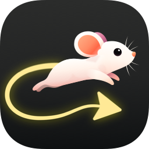

MouseTail$ curl …/install.sh | sh
✓ MouseTail is running
✓ MouseTail is running
Install on both
A menu bar app on a Mac. One command on Linux, no sudo.
Push your cursor off the edge of one computer's screen and keep going, onto the one beside it. Your keyboard, clipboard and sound come too. Mac and Linux, either way round.
Push off the edge…
How it works
MouseTail runs quietly on both computers and finds the fastest way between them. Nothing to configure unless you want to.

MouseTailA menu bar app on a Mac. One command on Linux, no sudo.
Type this on Galen's MacBook Pro
Your other computer shows a four-digit code. Type it on your Mac and they remember each other.
Put your computers where they sit on your desk, like a Mac's display settings. Both remember it.
Features
The computer you're sitting at stays in charge. A lock screen, a frozen computer or a Wi-Fi drop-out can't trap the cursor.
Copy on one computer, move across, paste on the other. It travels with the cursor.
The computer you're sitting at plays the others' sound, AirPods included, and its play and pause buttons reach them too.
Mac habits work on Linux, and Linux's Super key is ⌘ on a Mac: copy and paste, tabs, switching windows.
Move onto a dark or locked screen and it lights up. Push towards a sleeping computer to wake it.
Computers find each other on your network and pick the quickest connection. Wired beats Wi-Fi.
Private
Your keystrokes go straight to the computer beside you and nowhere else.
Every connection uses TLS 1.3, with keys that never leave each computer.
Nothing to sign up for. MouseTail only ever talks to your own computers.
The code never crosses the network, and wrong guesses lock pairing for a while.
Pairing code
Type this on Galen's MacBook Pro to connect it.
Compatibility
Any computer can be the one you sit at: Mac to Linux, Linux to Mac, Mac to Mac or Linux to Linux. Here's everything MouseTail does on each, gaps included.
| Feature | macOS14.2+ · Tested | HyprlandIncl. Omarchy · Tested | Sway, niri, riverOther wlroots · Untested | KDE PlasmaUntested | GNOMEUntested | WindowsComing later |
|---|---|---|---|---|---|---|
| Mouse and keyboard | ||||||
| Control other computers from here | Yes1 | Yes | Yes | Yes | Not yet | Planned |
| Be controlled from another computer | Yes | Yes | Yes | One-time setup2 | One-time setup2 | Planned |
| More than two computersEach beside the one you sit at, and hop straight between them | Yes | Yes | Yes | Yes | Yes | Planned |
| Multiple displays on either sidePlug one in or unplug it and MouseTail keeps up | Yes | Yes | Yes | Yes | Yes | Planned |
| Cursor always comes homeThrough lock screens, frozen computers and drop-outs, or press Ctrl Option Esc | Yes | Yes | Yes | Yes | Yes | Planned |
| Shortcuts translated between Mac and Linux⌘C → Ctrl C on Linux, Super → ⌘ on a Mac | Yes | Yes | Yes | Yes | Yes | Planned |
| Ripple where the cursor crossesSo you can see where it went; can be turned off | Yes | Yes | Yes | Yes | Not yet | Planned |
| Only one cursor on showThe computer you've left hides its own until you use its mouse | Yes | Yes | Yes | Yes | Not yet | Planned |
| Trackpad scrolling with momentumFrom a Mac's trackpad, as if it were its own | No momentum | Yes | Yes | No momentum | No momentum | Planned |
| Clipboard | ||||||
| TextUp to 10 MB | Yes | Yes | Yes | Yes | Not yet3 | Planned |
| Images and files | Planned | Planned | Planned | Planned | Planned | Planned |
| Sound | ||||||
| Play another computer's soundThrough whatever it's using, AirPods included | Yes | Yes | Yes | Yes | Yes | Planned |
| Send its sound to the computer you're at | Yes4 | Yes | Yes | Yes | Yes | Planned |
| Play, pause and skip from hereAirPods, media keys and the desktop's controls | Yes | Yes | Yes | Yes5 | Yes5 | Planned |
| Hear several computers at onceSound comes from one computer at a time | Not yet | Not yet | Not yet | Not yet | Not yet | Planned |
| Waking up | ||||||
| Lights up a blanked or locked screenCloses Omarchy's screensaver too | Yes | Yes | Yes | Yes | Yes | Planned |
| Wake it from sleepWake-on-LAN, sent when you push towards it | Not yet | One-time setup6 | One-time setup6 | One-time setup6 | One-time setup6 | Planned |
| Setting up | ||||||
| Finds your computers and the fastest link | Yes | Yes | Yes | Yes | Yes | Planned |
| Pair with a four-digit code | Yes | Yes | Yes | Yes | Yes | Planned |
| Pause a computer without forgetting itNothing crosses until you resume it, from either computer | Menu button | Omarchy bar7 | Command line | Command line | Command line | Planned |
Status at a glancemousetail watch can feed any status bar | Menu bar | Omarchy bar7 | Command line | Command line | Command line | Planned |
| Arrange your computersBoth computers share one arrangement | Drag to arrange | Command line | Command line | Command line | Command line | Planned |
| InstallNo sudo needed on Linux | App download | One command | One command | One command | One command | Planned |
| Processors | Apple Silicon, Intel | x86-64, ARM64 | x86-64, ARM64 | x86-64, ARM64 | x86-64, ARM64 | Planned |
| Starts at login | Menu option | Yes8 | Yes8 | Yes | Yes | Planned |
| Updates itself | Yes | Yes | Yes | Yes | Yes | Planned |
enable-input.sh once (it asks for your password) so other computers can type and click here. The installer tells you when.enable-input.sh setup to take the presses.enable-wake.sh once. Needs NetworkManager and a network card that can be woken.Linux means Wayland desktops with systemd and PipeWire. Keys are sent by position, so give both computers the same keyboard layout. Using something else? Tell us how it goes
Free and open source. For Macs and Linux (Wayland), in any combination.
macOS 14.2+, Apple Silicon and Intel. Not notarised yet: the first time, open System Settings → Privacy & Security and click Open Anyway. Linux: Hyprland, Sway, KDE and GNOME on Wayland (some still experimental).
Release notes on GitHub